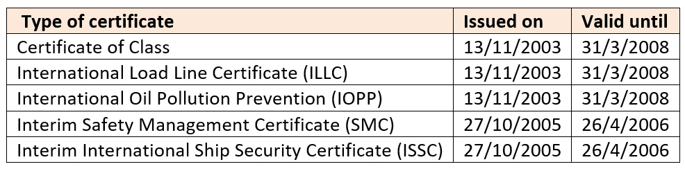
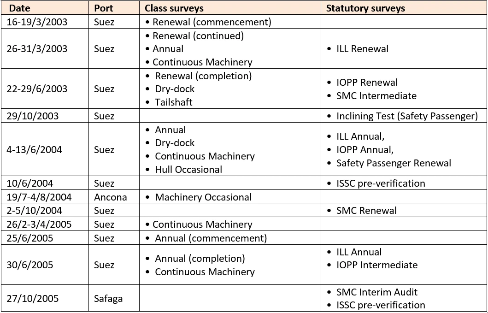
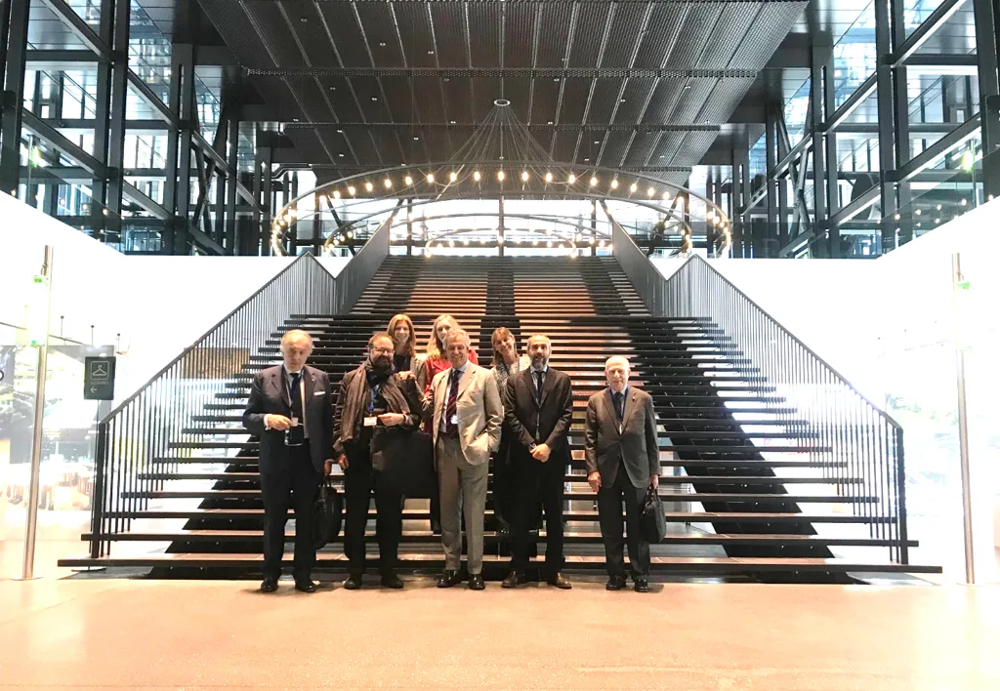
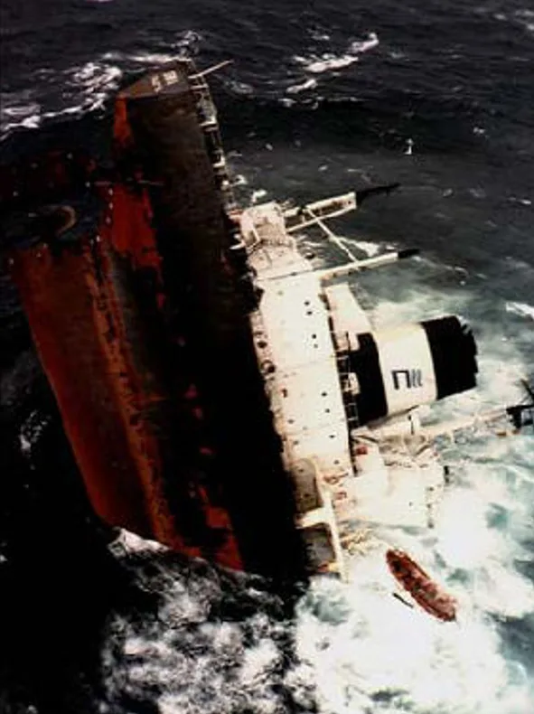

The case
The role of RINA
How can two identical ships, the Al Salam Petrarca 90 and the Al Salam Boccaccio 98, both capsize and sink after their crews tried to put out a fire? How could no one foresee and prevent the second disaster after the first?
RINA S.p.A. and Registro Italiano Navale were the classification societies of the ferries from before their construction until the day of the sinking, under every owner: Tirrenia from 1969 to 1999, El Salam Shipping & Trading until 2005, El Salam Maritime Transport from 2005 to 2006. As recognised organisations they also certified navigation safety on behalf of the flag state, first Italy and, from 1999, Panama.
When a victim’s relative asked for those records, RINA refused. In 2007 the Regional Administrative Court of Liguria ordered it to hand over part of them, and the experts could finally study the projects and inspections.
Certificates and inspections, according to RINA




The ship was visited and inspected many times every year. Across the five identical sister ships, inspections add up to roughly two hundred occasions to verify the safety of the ship, the crew and the company. It was not enough.
What the investigations found
Panama: the garage floods in ten minutes
A test on the sister ship Al Salam Carducci 92 showed that the fixed fire-fighting system floods the garage deck in about ten minutes. The final report adds that the system could not control the fire from its initial stage.
Egypt: water cannot drain beyond 6.5°
The Egyptian committee found that the garage drainage works by gravity and stops discharging water into the sea when the ship heels more than 6.5 degrees. Testing the sister ship, it judged the system inefficient.
Two countries, one conclusion
Different committees of experts, in different countries, agree: the system was inefficient. Water had to leave the hull quickly, not stay trapped in the garage and overturn the ferry.

Ten years lost to “sovereign immunity”
RINA rejects all accusations. It first asked to bring eleven other parties in Egypt and Panama into the case, which the court refused. Then it argued that, having certified the ship for Panama, it could only be tried there as a foreign sovereign. Genoa agreed in 2012, the Court of Appeal in 2014.
In 2014 a second group of relatives also sued Registro Italiano Navale, RINA’s parent company. In 2020 the Court of Justice of the European Union and the United Sections of the Italian Supreme Court overturned the Genoa decisions. The cases returned to Genoa.
The rulings
Since 2021: back in Genoa
The two cases, now joined, resumed in 2021. The judge appointed three experts to establish whether the sinking and the deaths are the fault of RINA and Registro Italiano Navale, and how much the master’s conduct weighed, if at all. At the families’ request, an expert whose company was certified by RINA was excluded, to avoid any conflict of interest.
The families have appointed eight experts of their own: stability, shipbuilding, ship handling, safety management, fire and explosion, navigation safety, marine science and ro-ro passenger ships. RINA now lists the case in its annual reports among its main incidents and potential risks.

A precedent: the Erika
In 1999 the oil tanker Erika sank in the Bay of Biscay, devastating the coast of Brittany. RINA was her classification society. French courts held RINA criminally liable at every level, with a final ruling by the Court of Cassation on 25 September 2012. RINA later settled the compensation.